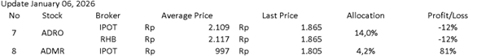

ADRO & ADMR Analysis: Strategic Shift & Green Energy Transition
STOCK ANALYSIS • January 6, 2026
I have been observing Adaro Energy (ADRO) for a long time, as it is one of Indonesia’s coal mining companies with relatively stable financial performance despite the cyclical fluctuations in coal prices. ADRO is also among the coal producers with the largest reserves in Indonesia, which has long supported its operational resilience.
I first purchased ADRO shares in 2019 at around IDR 1,300, but I sold them relatively quickly. I no longer remember the exact reason, although it was likely because I wanted to reallocate capital to another company that I considered more attractive at the time.
Following the COVID-19 outbreak in 2020, ADRO’s financial performance improved significantly, driven by a sharp surge in global coal prices. I only began paying attention to ADRO again and gradually reaccumulated the stock in mid-2024, after learning about the company’s long-term plan to transition toward green energy. This strategy aims to anticipate the eventual depletion of coal reserves while aligning with Indonesia’s Net Zero Emissions 2050 commitment.
An interesting development occurred at the end of 2024, when ADRO’s share price surged nearly 100%, fueled by market speculation surrounding the potential IPO of its green energy business. However, instead of spinning off the renewable segment, ADRO ultimately divested its majority stake in Adaro Andalan Indonesia (AADI), the company’s primary profit contributor at the time, which operated its thermal coal mining business.
To compensate shareholders, ADRO distributed an extraordinarily large dividend, which was widely perceived as an opportunity for investors to participate in AADI’s IPO. AADI was listed at a relatively attractive valuation, and the IPO proved highly successful. Shareholders who reinvested their ADRO dividends into AADI shares were able to realize gains of nearly 100%. Interestingly, during this period, ADRO’s share price declined sharply.
Personally, I chose to average down my ADRO position, viewing the price correction as an opportunity to accumulate shares of a company that was repositioning itself for a cleaner and more sustainable energy future.
In mid-2025, I decided to sell my entire AADI position, realizing a profit of approximately 50%, and reallocated the proceeds toward further accumulation of ADRO shares, despite carrying an unrealized loss of around 30% at the time. In addition, I also began gradually investing in ADMR, whose valuation appeared relatively more premium compared to ADRO.
Currently, ADRO holds approximately 85% ownership in ADMR and around 15% in AADI. As a result, ADRO’s main profit engine has shifted from AADI to ADMR, which focuses on high-calorie coal. Beyond coal, ADMR is also developing an aluminum smelter project in North Kalimantan. The smelter will be supplied with electricity generated by hydropower plants owned by ADRO, creating vertical integration between energy generation and downstream aluminum production.
This indicates that ADRO’s future revenue will be increasingly dependent on ADMR, while its renewable and green energy ventures, although strategic, are not yet meaningful contributors to earnings.
As of 6 January 2025, ADMR’s share price has risen significantly, driven by expectations ahead of the aluminum smelter’s operational phase. In my view, the long-term outlook for Adaro Energy remains highly promising, provided that the company continues to be managed prudently and strategically. For this reason, I have decided to continue holding both ADRO and ADMR shares.

This reflects my personal investment decision and perspective. It is not intended as investment advice or a recommendation to buy, sell, or hold any securities. Investing in the capital market involves significant risks, including the potential loss of capital. Each investor should conduct their own research and make decisions according to their individual risk tolerance and financial circumstances.
”If you’re not willing to react with equanimity to a market price decline of 50%, you’re not fit to be a common shareholder.”
— Charlie Munger
Saya sudah lama memperhatikan Adaro Energy (ADRO), sebagai salah satu perusahaan tambang batu bara Indonesia dengan kinerja keuangan yang relatif stabil di tengah fluktuasi siklus harga batu bara. ADRO juga termasuk dalam jajaran produsen batu bara dengan cadangan terbesar di Indonesia, yang selama ini menjadi fondasi ketahanan operasionalnya.
Saya pertama kali membeli saham ADRO pada 2019 di kisaran harga IDR 1.300, namun menjualnya kembali cukup cepat. Saya sudah tidak ingat alasan pastinya, meskipun kemungkinan besar karena ingin mengalihkan modal ke perusahaan lain yang saat itu saya nilai lebih menarik.
Setelah pandemi COVID-19 melanda pada 2020, kinerja keuangan ADRO membaik signifikan, didorong oleh lonjakan tajam harga batu bara global. Saya baru mulai kembali memperhatikan ADRO dan secara bertahap mengakumulasi sahamnya di pertengahan 2024, setelah mengetahui rencana jangka panjang perusahaan untuk bertransisi menuju energi hijau. Strategi ini bertujuan mengantisipasi menipisnya cadangan batu bara sekaligus menyelaraskan diri dengan komitmen Indonesia menuju Net Zero Emissions 2050.
Sebuah perkembangan menarik terjadi di penghujung 2024, ketika harga saham ADRO melonjak hampir 100%, dipicu spekulasi pasar seputar potensi IPO bisnis energi hijau perseroan. Namun alih-alih melakukan spin-off segmen terbarukan, ADRO justru melepas mayoritas kepemilikan di Adaro Andalan Indonesia (AADI), kontributor laba utama perseroan saat itu, yang menjalankan bisnis tambang batu bara termal.
Sebagai kompensasi bagi pemegang saham, ADRO membagikan dividen yang sangat besar, yang secara umum dipersepsikan pasar sebagai kesempatan bagi investor untuk berpartisipasi dalam IPO AADI. AADI melantai di bursa dengan valuasi yang relatif menarik, dan IPO-nya terbilang sangat sukses. Pemegang saham yang menginvestasikan kembali dividen ADRO mereka ke saham AADI berhasil meraih keuntungan hampir 100%. Menariknya, di periode yang sama, harga saham ADRO justru turun tajam.
Secara pribadi, saya memilih untuk average down posisi ADRO saya, memandang koreksi harga tersebut sebagai peluang untuk mengakumulasi saham perusahaan yang sedang memposisikan ulang dirinya menuju masa depan energi yang lebih bersih dan berkelanjutan.
Pada pertengahan 2025, saya memutuskan untuk menjual seluruh posisi AADI saya dengan merealisasikan keuntungan sekitar 50%, dan mengalihkan hasilnya untuk menambah akumulasi saham ADRO, meskipun saat itu saya masih menanggung unrealized loss sekitar 30%. Di samping itu, saya juga mulai secara bertahap berinvestasi di ADMR, yang valuasinya tampak relatif lebih premium dibanding ADRO.
Saat ini, ADRO memegang kepemilikan sekitar 85% di ADMR dan sekitar 15% di AADI. Akibatnya, mesin penghasil laba utama ADRO telah beralih dari AADI ke ADMR, yang berfokus pada batu bara kalori tinggi. Di luar batu bara, ADMR juga tengah mengembangkan proyek smelter aluminium di Kalimantan Utara. Smelter tersebut akan dipasok listrik dari pembangkit hidroelektrik milik ADRO, menciptakan integrasi vertikal antara pembangkitan energi dan produksi aluminium hilir.
Hal ini mengindikasikan bahwa pendapatan ADRO ke depan akan semakin bergantung pada ADMR, sementara usaha energi terbarukan dan hijau, meski strategis, belum memberikan kontribusi laba yang berarti.
Per 6 Januari 2025, harga saham ADMR telah naik signifikan, didorong oleh ekspektasi menjelang fase operasional smelter aluminium. Menurut pandangan saya, prospek jangka panjang Adaro Energy tetap sangat menjanjikan, asalkan perusahaan terus dikelola dengan prudent dan strategis. Itulah mengapa saya memutuskan untuk tetap memegang saham ADRO maupun ADMR.
Tulisan ini mencerminkan keputusan dan perspektif investasi pribadi saya. Ini tidak dimaksudkan sebagai saran investasi atau rekomendasi untuk membeli, menjual, atau menahan efek apa pun. Berinvestasi di pasar modal melibatkan risiko signifikan, termasuk potensi kerugian modal. Setiap investor harus melakukan riset sendiri dan membuat keputusan sesuai toleransi risiko dan kondisi keuangan masing-masing.
”Jika kamu tidak siap menghadapi penurunan harga pasar sebesar 50% dengan tenang, kamu tidak layak menjadi pemegang saham biasa.”